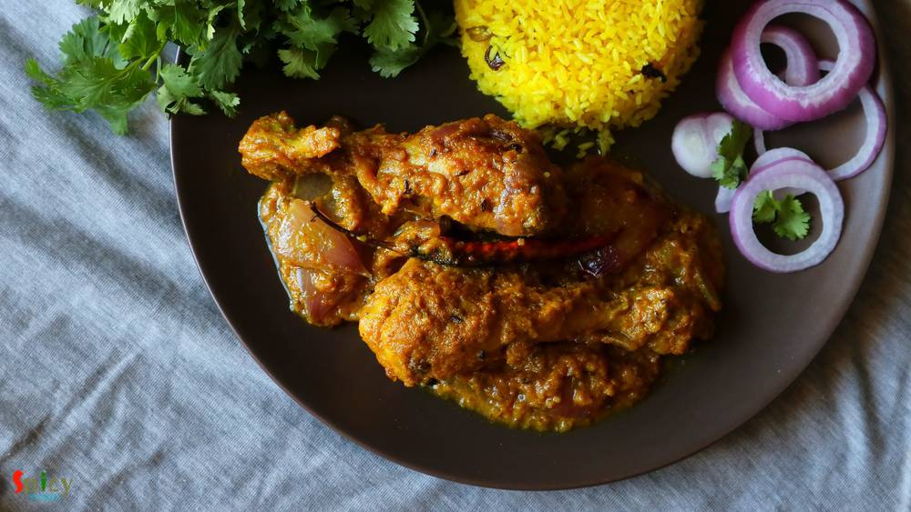
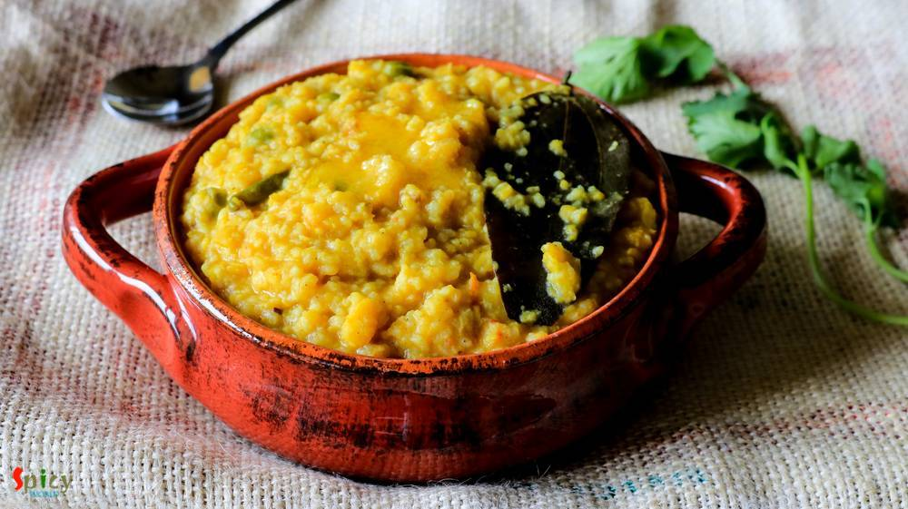

Simple and Easy Recipes

Nonveg Recipe
Jun 29, 2016
Our common friend Subhodip visited our house last weekend for a dinner. He is a real foodie and have a very good knowledge about food and restaurants. So, I wanted to make something new on chicken for him and also for my blog. I have already posted 'mutton dopyaza' recipe, then I thought this time why not with chicken? Confirmed the idea with my hubby and 'chicken dopyaza' got selected for main-co ...


Veg Recipe
Jun 24, 2016
Panchmel Daal is a very healthy and traditional Rajasthani dish, which you can make with five types of lentil - yellow moong, urad, masoor, toor, whole moong / chana daal. This daal is also known as 'panchkuti daal'. This dish is fully packed with protien and nutrition, also it requires very less oil. You can enjoy this delicious, thick consistancy daal with plain roti, bati or rice. Not only the ...

Veg Recipe
Jun 23, 2016
After scorching heat of summer, first few days of monsoon are my favourite. In those days I don't like to stand in front of the gas for long time, because in the meantime you can enjoy the rain by sitting beside the window. I think you guys have already guessed that I am talking about one pot meal - they are so easy to cook. One of the famous one pot meal in Bengal is 'khichuri' / khichdi. I have ...

Nonveg Recipe
Jun 22, 2016
'Keema Aloo' is my favourite curry when it comes to a fuss free but yummy dinner. It's so rich and spicy that there is no other meat curry which you can make in such a less time. I used mutton keema but feel free to use chicken mince. After adding the cubed potatoes, this dish becomes a killer ! Serve this with plain rice or paratha, every time 'keema aloo' will be a hit. It is also a very good ma ...

Veg Recipe
Jun 17, 2016
Most probably I am the only blogger who have taken so long to post about her own regional recipe of 'phuchka'. Because almost every blogger has their own regional recipe of 'panipuri / golgappa'. But it's better late than never. In Kolkata I never eat 'phuchka' with sweet chutney, always with tangy tamarind water ? and believe me there is no fun of having them sweet, the taste has to be spicy and ...

Veg Recipe
Jun 16, 2016
Onion parathas can be anyone's savior because they are very easy to make. I know that in many households people loves to eat 'paratha' in their breakfast. Only we know about the pain of making time-consuming breakfast. But these parathas are so simple and take very less time to cook. We both thoroughly enjoyed the spicy onion filling inside those soft parathas. You can make 5 parathas with these p ...
")
Nonveg Recipe
Jun 14, 2016
Who doesn't crave for yummy snacks in the evening with some cold drinks during summer ?? I guess everybody does. Summer or winter doesn't matter ... weekend evenings are meant for some awesome starters ! After few trials I finally created the exact taste of Kolkata's one of the famous street food - 'kobiraji cutlet'. Kobiraji means coverage or lace like texture, which you can create with beaten eg ...

Nonveg Recipe
Jun 13, 2016
We, Bengalis, love to eat fish in many forms. One of the popular snack of West Bengal is 'macher chop'. Spicy crumbled fish inside and crispy coating outside - scrumptious !! We both usually enjoy this snack in the evening along with a cup of tea or with a can of beer. Both combos are unbeatable. If you have to impress any Bengali ever in your life, just indulge him/her in 'Bikeler adda' (evening ...

Nonveg Recipe
Jun 13, 2016
Earlier I have shared the recipe of 'Kolhapuri Egg curry', today I am going to share the same recipe, but with chicken and some changes. One of the main ingredient in Maharashtrian cuisine is 'coconut'. We both are not too much coconut eater but when it comes to make authentic dish, I always try to make the taste as close as possible. As this is a 'Kolhapuri' gravy, you have to incorporate coconut ...

Veg Recipe
Jun 8, 2016
This dish is an indo-chinese item which is very popular and frequently ordered in restaurants of India. Gobi means cauliflower. The recipe is very similar to chicken manchurian (which I have already posted), except the key ingredient here is cauliflower, not chicken. You can make this dish with potatoes, soya granules or raw jackfruit also. Every single time it tastes delicious and goes best with ...